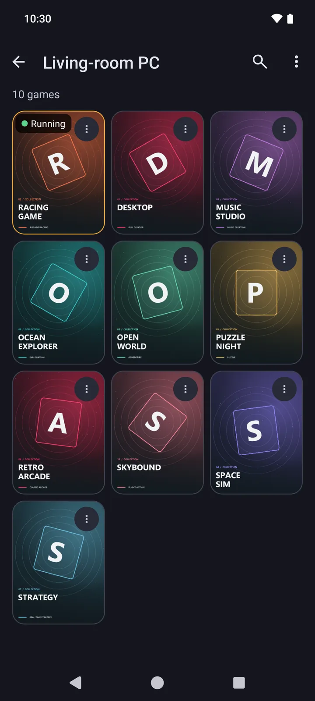
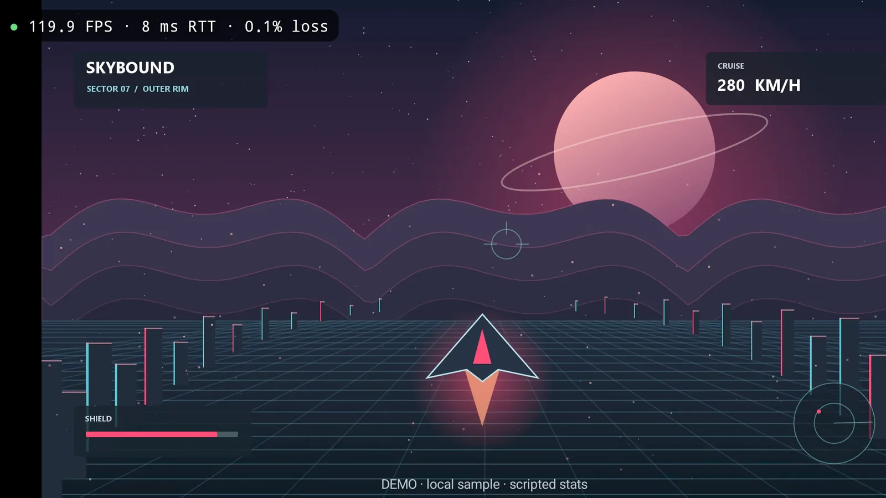
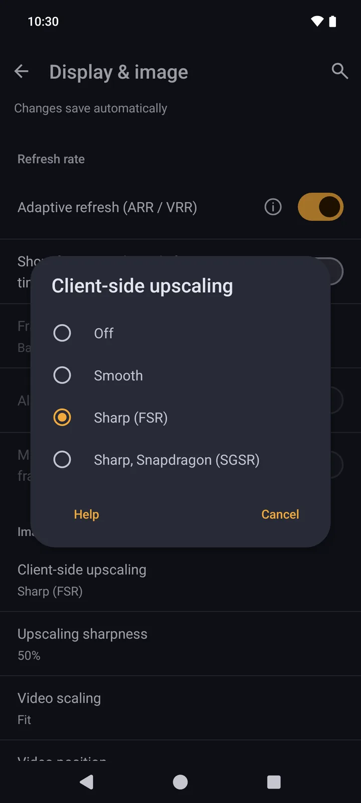
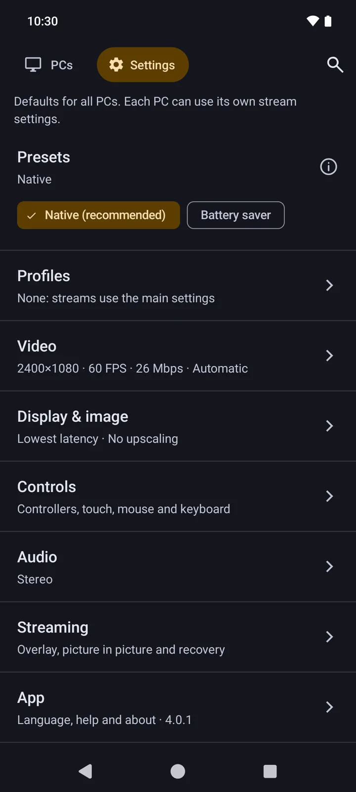
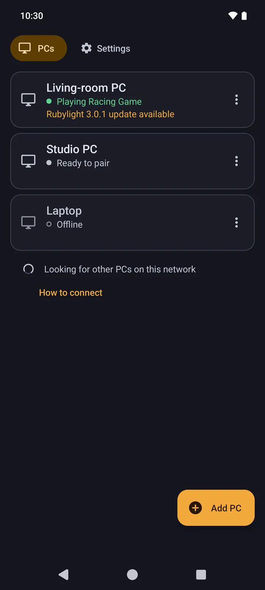

Rund 7 ms bis zum Bildschirm
Auf einem Retroid Pocket 6 war das Bild im Median 7 ms, nachdem der PC es aufgenommen hatte, auf dem Bildschirm (HEVC 1080p60, gemessen am 23.10.2026).
Rust-Streaming-Engine
Streame deinen PC auf Android, Windows und Linux.
Deine Spiele, dein Desktop, deine Steuerung. Nightjar 4.0 verbindet sich mit jedem Moonlight-kompatiblen Host und bringt alles auf dein Handy, deinen Handheld, deinen Fernseher oder einen anderen PC.
Android 5.0+ · Windows · Linux · Frei und quelloffen

Der Streaming-Host auf deinem PC führt deine Spiele und Apps aus.
Bild und Ton gelangen als Stream auf dein Android-Gerät.
Deine Eingaben gehen direkt zurück an den PC.
Vom ersten Tastendruck bis zum nächsten Bild. Für einen direkten, klaren Stream.
Auf einem Retroid Pocket 6 war das Bild im Median 7 ms, nachdem der PC es aufgenommen hatte, auf dem Bildschirm (HEVC 1080p60, gemessen am 23.10.2026).
Rust-Streaming-Engine
AV1, HEVC und H.264, mit HDR10, HDR10+, HLG und Dolby Vision, wo dein Bildschirm sie zeigt, und voller Farbauflösung 4:4:4 für scharfen Text.
HDR10 · HDR10+ · HLG · Dolby Vision
Variables Frame-Pacing (VRR) folgt dem Spiel. Nightjar zeigt jeden Frame, sobald er bereit ist.
VRR-Pacing
Clientseitiges Upscaling mit FSR und Snapdragon GSR vergrößert deinen Stream direkt auf Android.
FSR · Snapdragon GSR
Zwischenablage, Dateien, freigegebene Ordner und USB-Geräte wie ein Grafiktablett, mit einem Rubylight-3.0-PC, der sie erlaubt.
Zwischenablage · Dateien · USB
Nimm einen freien Platz im Splitscreen-Koop-Spiel deines PCs ein, ändere Bitrate und Bildrate im Stream und sprich über dein Mikrofon.
Koop · Mikrofon



Verbinde deinen Controller. Nutze den Touchscreen. Oder bleib bei Maus und Tastatur.
Verbinde USB- und Bluetooth-Controller. Passe die Tastenbelegung an deinen Spielstil an.
Nutze direkte Berührung, ein natürliches Trackpad oder einen Mauszeiger auf deinem Gerät. Baue Bildschirmsteuerung mit Sticks und Triggern, im Stil Klassisch oder Modern.
Das Performance-Overlay zeigt FPS, Latenz und Frame-Verluste. Öffne die Diagnose und teile gezielt einen Bericht.
Die lokale Erkennung findet deinen Host. Wake-on-LAN weckt deinen PC für den nächsten Stream.
Bild und Ton zu dir. Deine Eingaben zurück zum PC.
Ein PC. Ein Android-Gerät oder ein anderer PC. Ein Moonlight-kompatibler Host.
Lade die APK aus dem aktuellen Release. Öffne sie auf Android und erlaube die Installation. Unter Windows oder Linux entpackst du das Desktop-Archiv und startest nightjar.
Starte den Streaming-Host auf deinem PC, zum Beispiel Apollo, Rubylight, Sunshine oder Vibepollo. Verbinde PC und Gerät mit demselben Netzwerk.
Wähle deinen PC in der App oder tippe auf „Add PC“. Gib die angezeigte PIN in den Einstellungen oder der Web-UI deines Hosts ein oder scanne den QR-Code eines Rubylight-PCs. Hat dein Host Berechtigungen pro Gerät, erlaube App-Listen, Streams, App-Starts und Eingaben.
Wähle ein Spiel oder deinen Desktop. Passe Bild und Steuerung an und starte deinen Stream.
